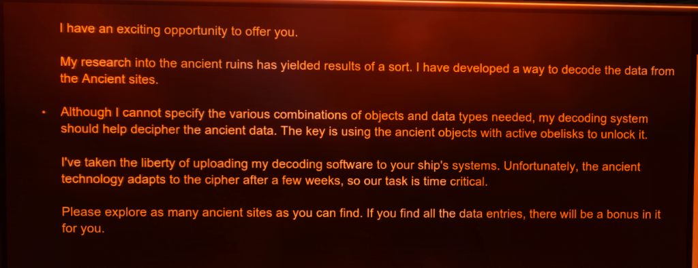
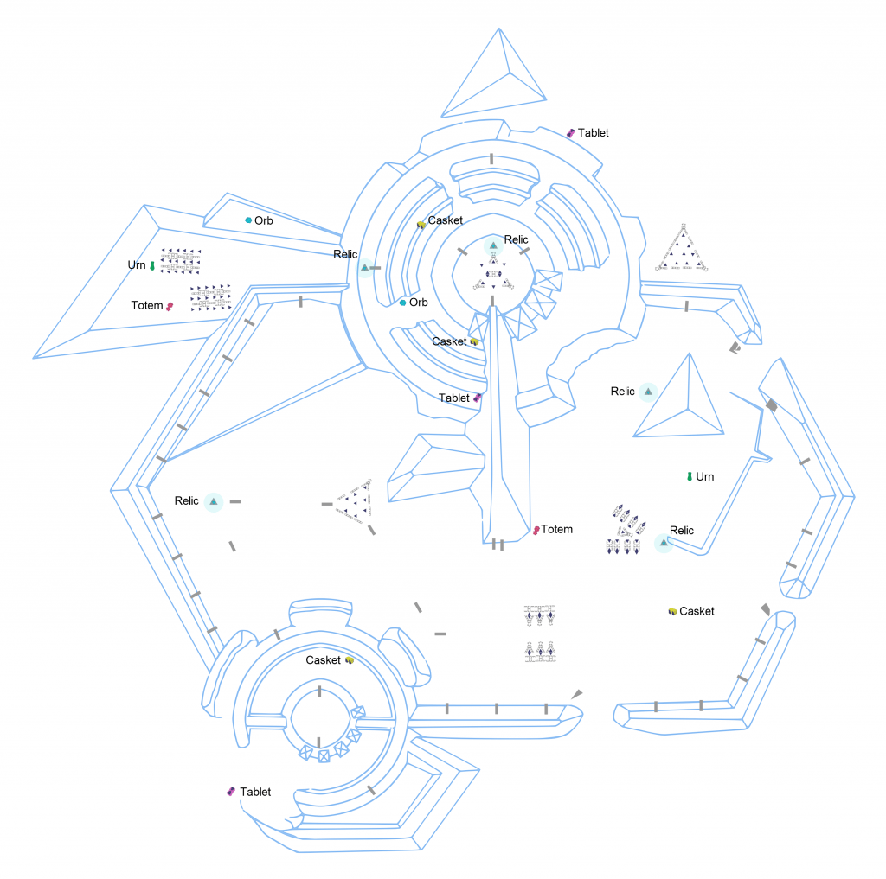
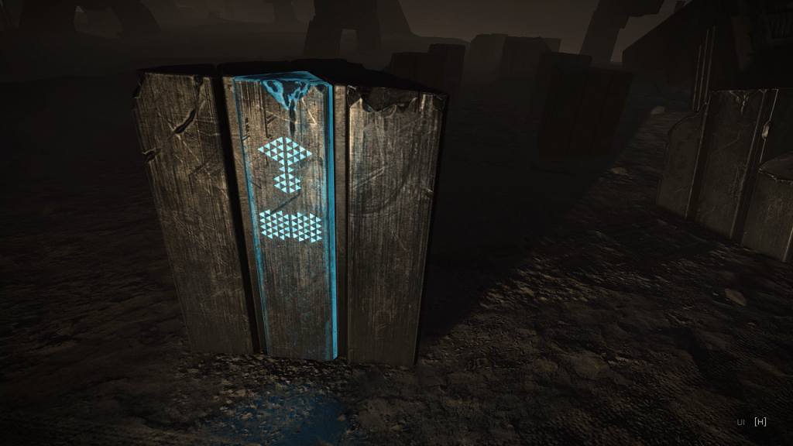
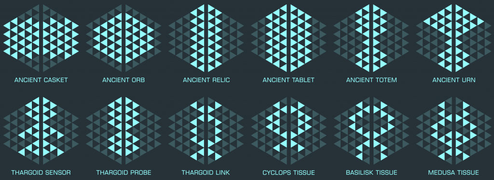

Guardian Sentinel
This is the second mission from Ram Tah. You do not need to have unlocked Ram Tah as an engineer to get the mission. It is based around the task of collecting messages from several locations, so is similar to his first mission Decoding The Ancient Ruins in some ways, though with important differences. Mission counts towards exploration elite.
Mission is available in Meene from Mitchell Dock or Weber Dock. These are both Outposts, so no large docking pads. Make sure you get the correct mission – it’s called Decrypting the Guardian Logs. There is another mission is this system called Decoding the Ancient Ruins – this is the first Ram Tah mission, and is not the one you want. You should get a message in your inbox on docking, and the mission will appear in your Transactions Tab. If you do not get the mission at the first attempt then try the other location. You may also need to exit the system and re-enter to get the mission – but this is rare. The mission pays 1 million credits per correct scan (total of 28) plus a 30 million completion bonus. You can do the mission multiple times. The mission gives you four weeks to complete.

Ram Tah Decrypting the Guardian Logs Mission
You will need the following (it is recommended to get the tissue samples first, as it is the most dangerous part of the mission):

GR1 Artefact Locations from Zebarmy
The mission involves scanning obelisks with the correct items in order to receive messages containing interesting lore (the Guardians Codex is available, but it is better to complete the mission). There are 28 and they are spread across Guardian Structures in multiple systems. The locations show in the Navigation Panel as Guardian Structures (not Guardian Ruins) – more are being found all the time. Note that there are other things you can do in these structures – these are described in the Guardian Structure codex entry. The items and systems we know are listed in our lore locations. The same item combinations give different lore items at different structure layouts, so keep a watch on which ones you have completed. You can find a complete list of structures in the Canonn report list – look at the GS – Site List tab.
Be aware that around the Guardian Structures there are hostile Sentries that can attack you – keep an eye on the scanner. They spawn from small piles of rocks and there are normally 4 per site, though more can appear over time. If your ship has Point Defence it will attack incoming missiles for you,which can be helpful. Ram Tah has found out some information about the sentinels that may be useful:
Guardian Sentinel
In the structures you will find Obelisks – some of which are lit up with symbols. These symbols indicate which items you need on board your SRV in order to retrieve the message from the obelisk. The order you put them in the SRV is not important.

Active Guardian Obelisk – Urn Casket

Artefacts for Decrypt the Guardian Logs mission – by Zebarmy
Once you have the correct items in your SRV approach the obelisk and scan with the SRV data link scanner (you may need to enter turret mode). You should get a message saying that the combination was correct, and an inbox message containing lore with an audio message. Note that combinations are available in multiple locations, so sometimes you will be told that the scan was correct but you will not see an inbox message – this is fine. If you get told the items were incorrect then check the obelisk glyphs again – some are very similar. If you do not get a ‘success’ message and you know this is a lore you have not collected then you can try relogging, or waiting and rescanning after the 30 second timeout, both have been known to work. If you received the 1 Million Credit payout for the scan then it was successful, though you may need to retake the mission of you want to receive the inbox message (these are similar to issues seen in the first Ram Tah mission).
After completing the mission you can hand in at the station where you took the mission in Meene – this will be highlighted in the Navigation Panel as is usual for missions.
This information was pulled together by many CMDRs on discord working together to try and solve the puzzle. Thanks to the following so far (in no particular order):
Crimshadow, DaveHedgehog, Dreamstate, Ecthelion, GoukaMekkyaku, Ishmair, Namix, Node_, Scotiecraptaco, Survivor-VT111, Suteksio, Tomson Jaden, Zebarmy